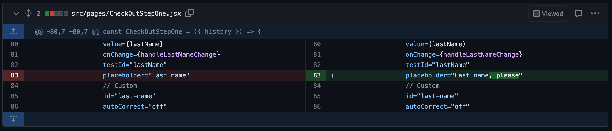
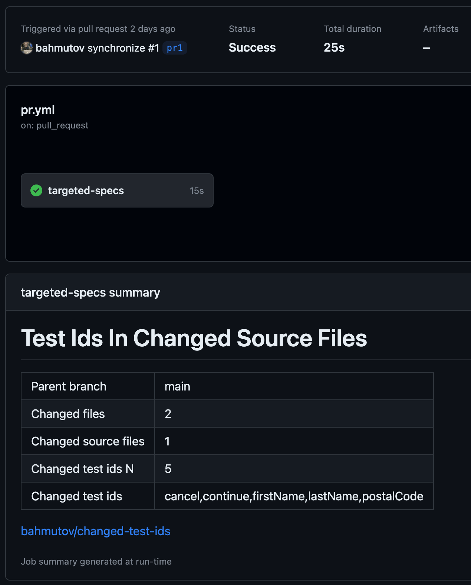
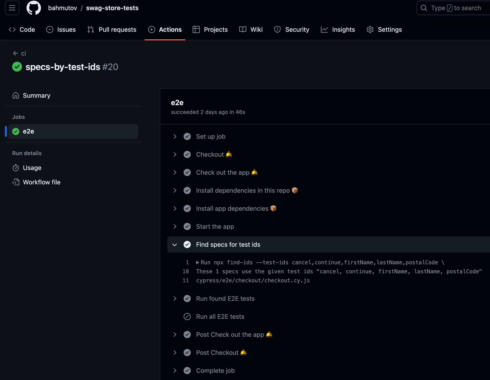
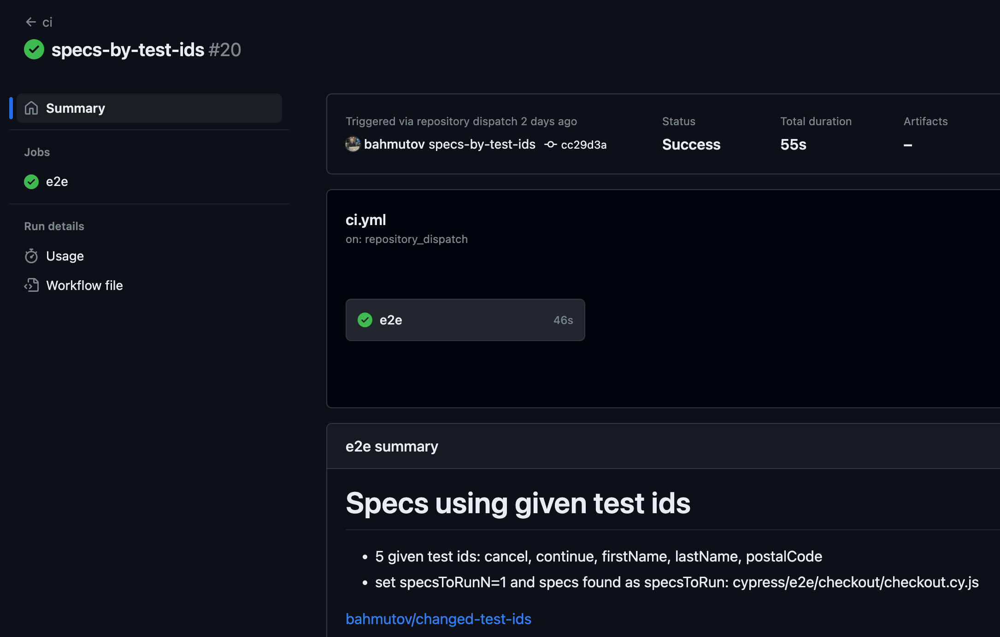
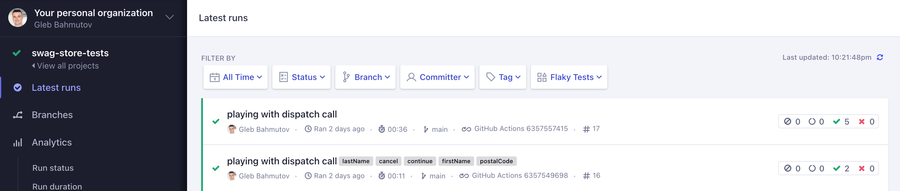

Pick Tests Using Test Ids From Another Source Repo
Select tests in another repo based on the source file changes.
This blog post continues the work shown in the post Using Test Ids To Pick Cypress Specs To Run. In the current example, the source and the tests live in two separate repositories. Both repos are using GitHub Actions to build and test the code. We will be using plugin changed-test-ids to pick the test ids from the source code changes, then pick the tests to run based on those ids.
When we open pull requests in the source repo, we want to build the application, maybe run some linting tools, and then trigger the end-to-end tests. Here is my example workflow, for simplicity I am not passing the build artifacts to the test workflow, just the current Git reference SHA.
name:pr on: [pull_request] jobs: targeted-specs: runs-on:ubuntu-22.04 steps: -name:Checkout🛎️ uses:actions/checkout@v4 with: # check out all branches so we can get # the list of changed source files fetch-depth:0
-name:Findtestidsusedinthechangedsourcefiles id:find-ids run:| npx find-ids --sources 'src/**/*.jsx' \ --branch main --parent --set-gha-outputs -name:TriggerE2EtestsbasedontestIDs # the tests reside in the repo bahmutov/swag-store-tests run:| curl -L \ -X POST \ -H "Accept: application/vnd.github+json" \ -H "Authorization: Bearer ${{ secrets.TRIGGER_TESTS_TOKEN }}"\ -H "X-GitHub-Api-Version: 2022-11-28" \ https://api.github.com/repos/bahmutov/swag-store-tests/dispatches \ -d '{"event_type":"specs-by-test-ids","client_payload":{"ref":"${{ github.event.ref }}","testIds":"${{ steps.find-ids.outputs.changedTestIds }}"}}'
The step find-ids looks at the changed source files src/**/*.js and finds all testId=... JSX attributes. The npx find-ids command comes from changed-test-ids NPM package alias.
The changed-test-ids even writes its summary, so you can see it in the GitHub Actions UI. For example, let's look at the pull request #1. The changed source file only touched a last name component.

Only this JSX file changed in this branch versus its parent branch main, and the find-ids tool detected the following testId=... values: cancel,continue,firstName,lastName,postalCode
Finally, the user sees the detected ids in the action summary panel.

The tests repo
Let's run the right specs based on the test ids in the source files. In the repo bahmutov/swag-store-tests I use the same workflow to run the tests on push event, when manually starting the workflow (and we allow passing a list of test ids to us via UI), plus when triggering the workflow using an API call.
name:ci on: push: # trigger this workflow from GitHub UI workflow_dispatch: inputs: testIds: description:| Comma-separated list of data test ids in the source files required:false type:string # trigger this workflow by calling GitHub API repository_dispatch: types: [specs-by-test-ids]
-name:Checkouttheapp🛎️ uses:actions/checkout@v4 with: repository:bahmutov/swag-store path:swag-store # use the given Git reference to check out the app source ref:${{github.event.client_payload.ref}} token:${{secrets.SWAG_REPO_GH_TOKEN}}
# inside the cloned repo with tests # the application is in its own "swag-store" subfolder
-name:Findspecsfortestids # if the workflow is triggered via repository_dispatch # then the list of test ids will be in the "client_payload" context object # if the workflow is started via workflow_dispatch # then the list of test ids will be in the "inputs" object if:${{github.event.client_payload.testIds||github.event.inputs.testIds}} id:find-specs run:| npx find-ids --test-ids ${{ github.event.client_payload.testIds || github.event.inputs.testIds }} \ --specs 'cypress/e2e/**/*.cy.js' --command getByTestId,containsTestId \ --set-gha-outputs -name:RunfoundE2Etests if:${{steps.find-specs.outputs.specsToRunN}} timeout-minutes:3 uses:cypress-io/github-action@v6 with: install:false wait-on:'http://localhost:3000' record:true spec:'${{ steps.find-specs.outputs.specsToRun }}' tag:'${{ github.event.client_payload.testIds || github.event.inputs.testIds }}' env: CYPRESS_RECORD_KEY:${{secrets.CYPRESS_RECORD_KEY}}
I check out the application source code, install dependencies, and install the test repo's own dependencies. Now we can find the specs to run, depending on the test ids, if any.
1 2 3 4 5 6 7 8 9 10 11
-name:Findspecsfortestids # if the workflow is triggered via repository_dispatch # then the list of test ids will be in the "client_payload" context object # if the workflow is started via workflow_dispatch # then the list of test ids will be in the "inputs" object if:${{github.event.client_payload.testIds||github.event.inputs.testIds}} id:find-specs run:| npx find-ids --test-ids ${{ github.event.client_payload.testIds || github.event.inputs.testIds }} \ --specs 'cypress/e2e/**/*.cy.js' --command getByTestId,containsTestId \ --set-gha-outputs
In the workflow triggered from the swag-store pull request we looked above, it finds the following specs and sets the list as the output:

If we find any specific specs, we run only those specs using the spec: ... argument
The test finishes and we can see the output of the changed-test-ids command npx find-ids --test-ids ... --specs ... --set-gha-outputs

I also pass the test ids as the Cypress Cloud run tag list, which makes finding the run in the list easy:

What if there are no detected test ids, or we simply want to run the tests? No problem, the "if - else" testing step runs all the specs if there are no steps.find-specs.outputs.specsToRunN.